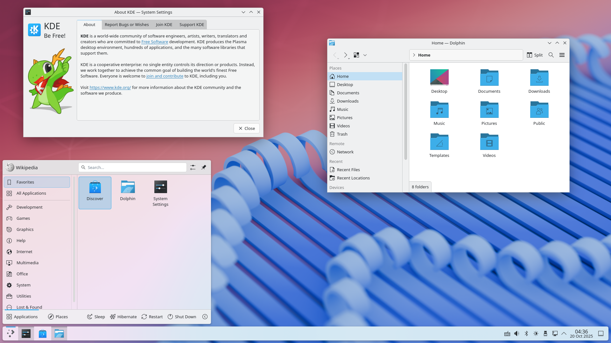
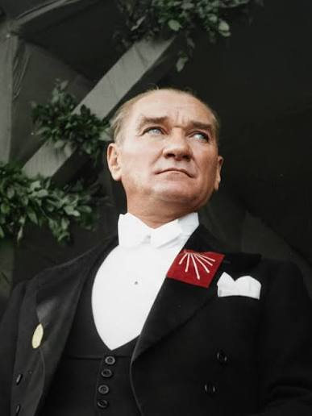

Özgür teknoloji, güçlü gelecek. Ubuntu tabanlı ve KDE Plasma masaüstü ortamıyla geliştirilen MILOS, modern ve erişilebilir bir işletim sistemi deneyimi sunmayı hedefler.
MILOS'u KeşfetMILOS, özgür yazılım anlayışını benimseyen, Ubuntu altyapısı üzerine geliştirilen bir işletim sistemi projesidir. Kullanıcılarına sade, modern, güvenilir ve güçlü bir masaüstü deneyimi sunmayı amaçlar.
Teknolojide bağımsızlığı, yeniliği ve özgür yazılım kültürünü destekleyerek herkesin erişebileceği güçlü bir işletim sistemi ekosistemi oluşturmak.
Kullanıcı dostu, güvenilir, güncel ve geliştirilebilir bir işletim sistemi sunmak; açık kaynak teknolojilerini destekleyerek teknolojiye katkıda bulunmak.
MILOS, Ubuntu tabanlıdır ve KDE Plasma masaüstü ortamını kullanır. Modern masaüstü özelliklerini özgür yazılım altyapısıyla bir araya getirir.
Ubuntu altyapısıyla geniş yazılım desteği ve güçlü bir temel.
Özelleştirilebilir, modern ve kullanıcı dostu masaüstü ortamı.
Açık kaynak dünyasının sunduğu özgürlük ve esneklik.

Mustafa Kemal Atatürk, Türkiye Cumhuriyeti'nin kurucusu ve ilk cumhurbaşkanıdır. Bağımsızlık, çağdaşlaşma, bilim ve akıl ilkeleriyle Türkiye'nin geleceğine yön vermiştir.

Türkiye'nin 81 ilini interaktif harita üzerinden keşfedin. Fareyi illerin üzerine getirerek şehir isimlerini görüntüleyebilirsiniz.
Haritadaki illerin üzerine gelerek isimlerini görüntüleyebilirsiniz. Haritayı yakınlaştırabilir ve hareket ettirebilirsiniz.